Carnet, pas un chat · 4 maquettes · 25.11
À choisir : laquelle, ou quel mélange, pour le Carnet. Cas réel : « écoulement qui fuit », plus un carnet qui n’est pas un problème.
3 tours de critique et 2 personas (ux, IA), puis un jugement final : 0 bloquant. Chaque maquette fait défiler tout le parcours ; « imaginé » marque ce qui manque à ton vrai carnet.
M1 · Le carnet se range
Un seul document : l’IA le réécrit par sections (pistes, étape, coût, conseil), un trait violet sur ce qu’elle a touché.
Notes finales : critique 8 · ux 9 · IA 8,5 (au 1er tour : 5,5). Reste : l’estimation 150 CHF rangée sous le coût du joint.
 changé par l’IA
changé par l’IAM2 · La fiche au-dessus
Tes notes ne bougent jamais ; l’IA tient une fiche en tête, chaque case renvoie à sa note, ses changements se décochent un par un.
Notes finales : critique 7,5 · ux 8,5 · IA 8,5 (au 1er tour : 6). Reste : fiche encore lourde, une décision imaginée non marquée.
 noter
noterM3 · Dans la marge
Ta page reste à toi ; l’IA écrit à l’encre violette dans la marge (trouvé, coût, conseil, pourquoi), en face de tes lignes.
Notes finales : critique 7 · ux 8 · IA 8 (au 1er tour : 5,5). Reste : lecture longue, marge à déchiffrer.
 noter
noter annoté
annoté


M4 · Deux vues
« Mes notes », ton texte brut ; « Organisé », la vue IA très visuelle, chaque bloc porte le numéro de sa note.
Notes finales : critique 8 · ux 9 · IA 9 (au 1er tour : 6,5). Reste : la marque « imaginée » manque sur trois citations.

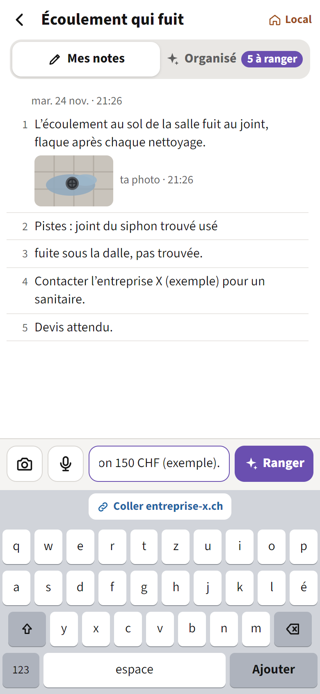
Mes notes
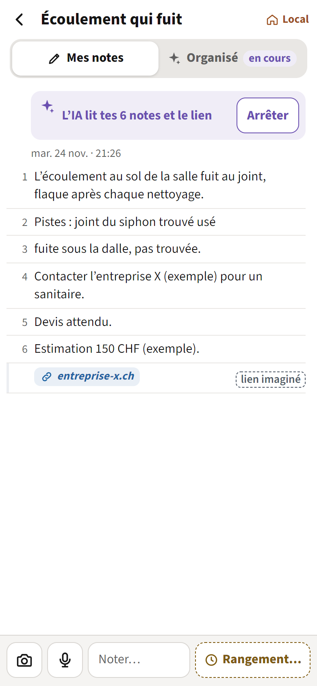
l’IA lit Organisé
Organisé

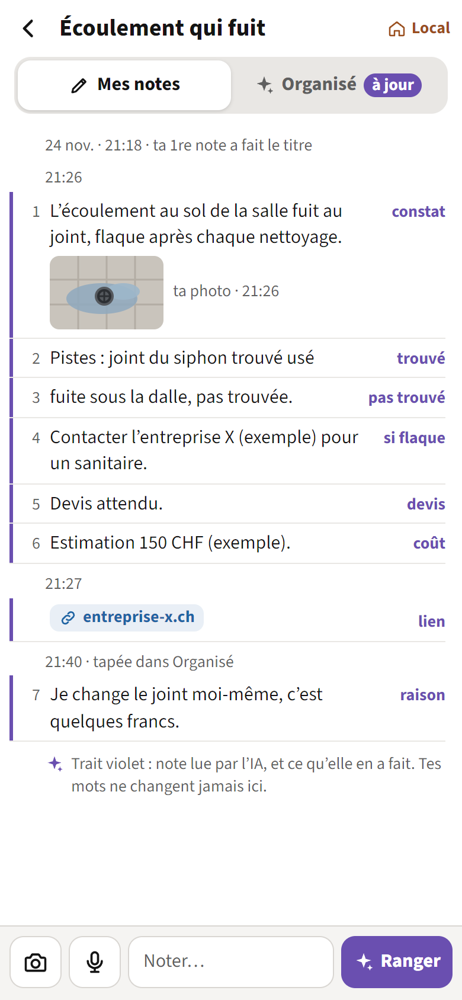
notes lues
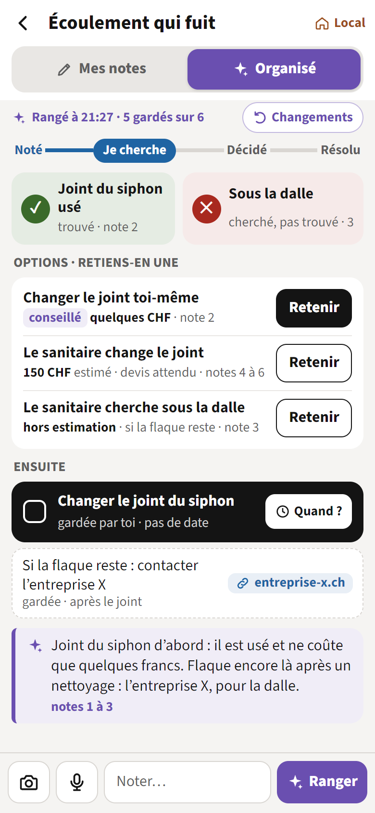
options
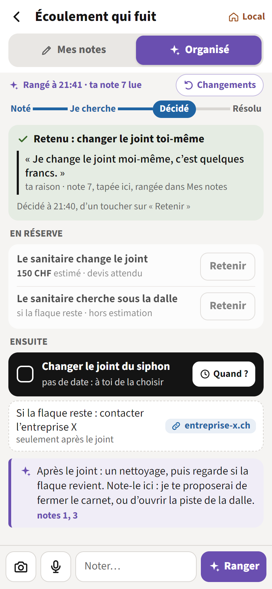
décidé
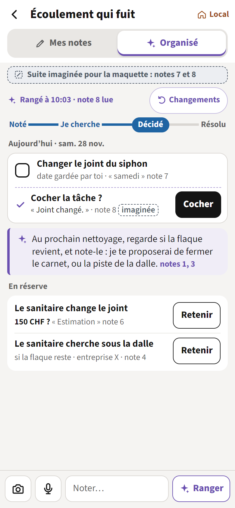
tâche
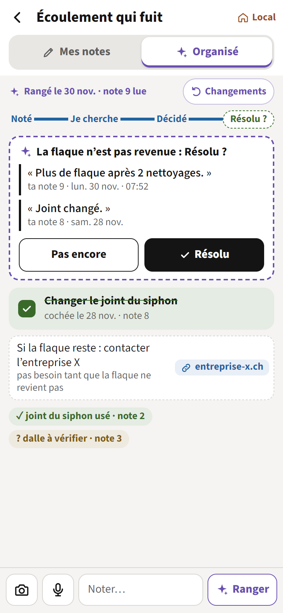
résoudre
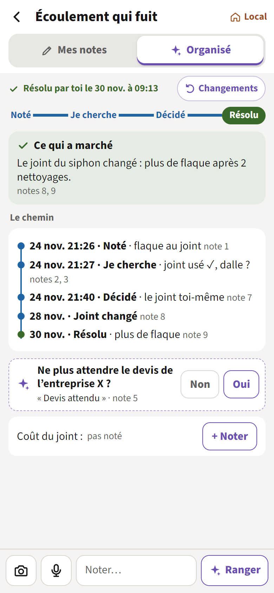
résolu
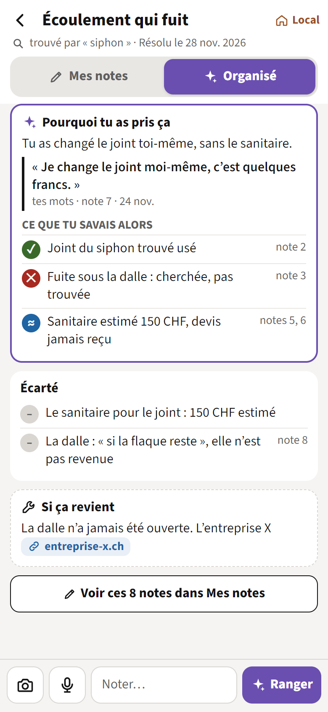
relire
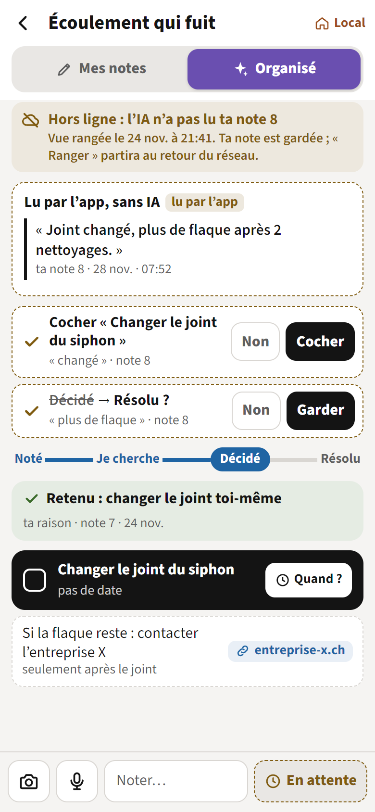
sans IA
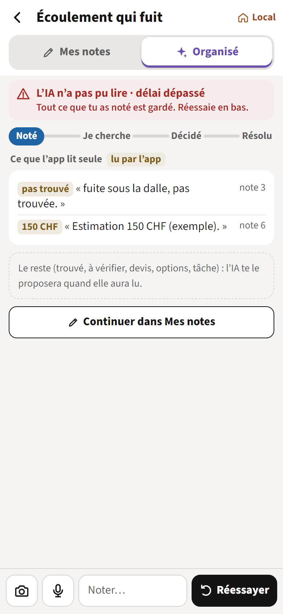
IA en erreur
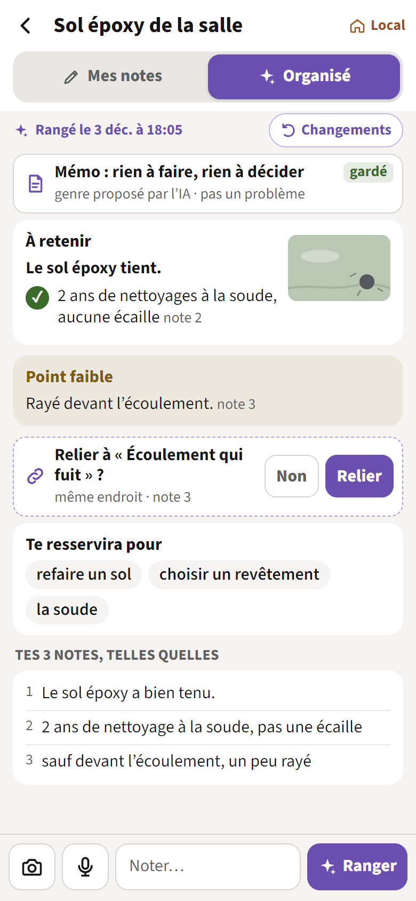
carnet mémo
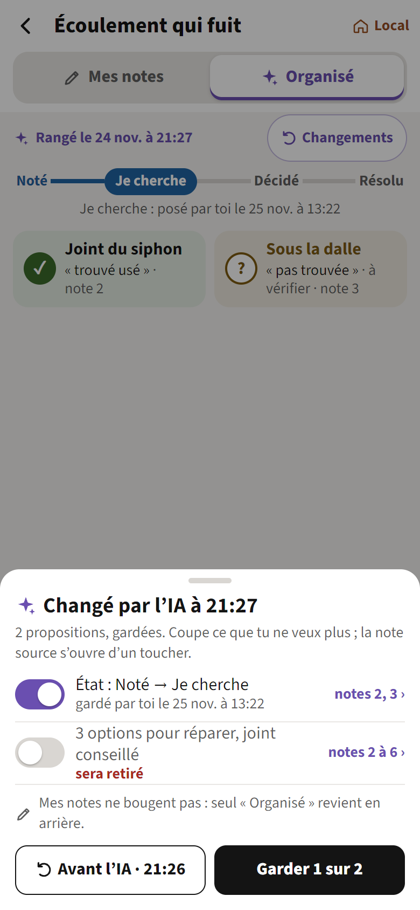
changé par l’IA